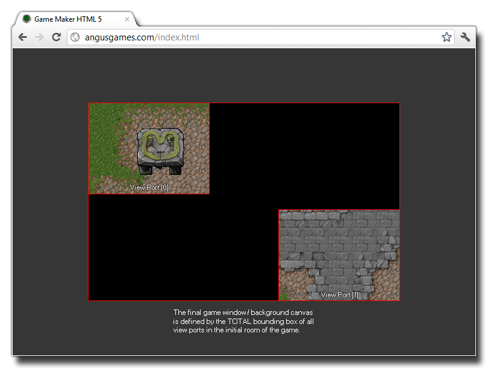

Views 视野
本章节设计定义视野属性的函数。
在你可以操纵GameMaker:Studio中，视野是一个最重要的显示属性。基本上，它们是在你游戏世界中能够显示房间玩家部分的小窗口，缩放或者1：1，当你的游戏房间大于显示尺寸时它们是必不可少的。如何不用代码直接在房间编辑器中设置视野，请见如下章节 More About Rooms - Views.
GameMaker:Studio允许8个独立的视野（编号0 - 7），所有这些都可以在任何一个时间被激活。
所有这些都可以显示同一房间内的不同的部分。这意味着您可以使用视野来绘制HUD元素或有分割的画面效果，例如。每个视野也有它自己的关联的可视部分。如
果视野是一个房间里玩家可以看到的部分，该部分是该屏幕区域的视野绘制，你可以变形和缩放视野，如果它的尺寸不同于视野部分大小。
关于视野和视野部分需要注意的是，边框的整个区域在游戏的第一个房间就全部激活，定义是背景画布大小（或是MacOS和
Windows的窗口大小），说明如下图所示：
最后，你应该小心使用多个视野在绘制事件，所有的实例为每个视野被调用一次，因此如果你在一房间有三个视野，每一步绘制事件将执行3次（基本上做三次的工作），如果游戏是大型或复杂的，它可以是一个放缓原因。 view_current 变量然而可以被用来限制这些绘制响应。
以下函数存在处理视野：
- view_enabled
- view_current
- view_visible
- view_object
- view_angle
- view_xview
- view_yview
- view_hview
- view_wview
- view_hborder
- view_vborder
- view_hspeed
- view_vspeed
- view_xport
- view_yport
- view_hport
- view_wport
- view_surface_id
- window_view_mouse_get_x
- window_view_mouse_get_y
- window_views_mouse_get_x
- window_views_mouse_get_y
- 碧绿的湖 -
Back : Windows and Views